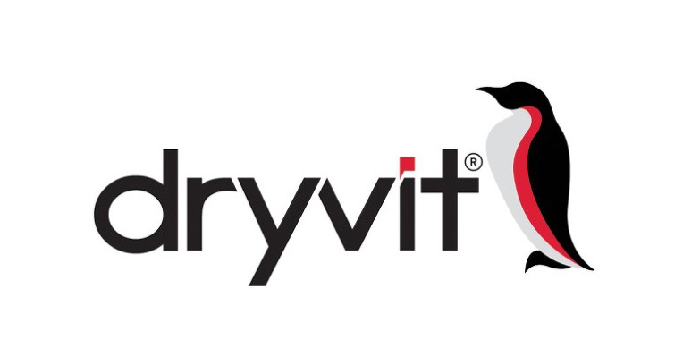
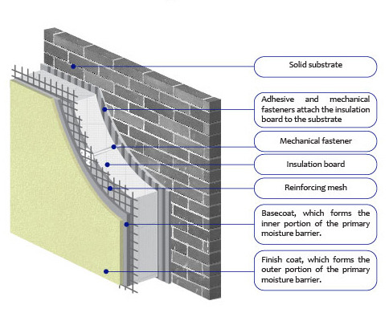
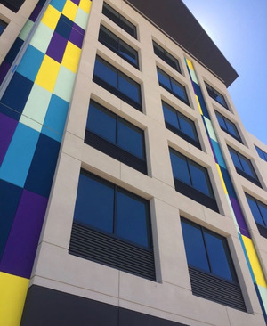

드라이비트사
드라이비트는 Dryvit사에서 개발한 외단열공법입니다.
외단열공법을 미국 등에서는 EIFS(Exterior insulation finishing system, 외부단열마감시스템)라고 부릅니다.

Exterior Insulation Finishing System
드라이비트 공법은 건물의 벽 외부에 ①접착제(Adhesive)를 바르고 ②단열재(Insulation Boards)를 접착한 뒤 ③메쉬(Reinforcing mesh) ④베이스코트(Base coat, 초벌) 그리고 마지막으로 ⑤마감재(Finish coat)를 입히는 방식입니다.
기존 단열 시공에 비해 건축비가 크게 절감되고 단열이 아주 우수하고 시공이 용이합니다.
 |
특히 석재질감에서 스타코마감까지 마감재의 색상과 질감이 다양해서 건축주의 선택의 폭이 넓고 리모델링도 손쉽게 가능한 장점이 있습니다. |
다만, 기존 외단열 드라이비트공법에서 백색스치로폴(비드법1종) 단열재를 주로 사용해 화재에 취약했고, 제천스포츠센터 화재사고와 밀양세종병원 화재사고에서 외단열공법에 대한 많은 문제점을 드러났습니다.
(2009년 12월) 30층 이상 대상으로 불에 취약한 외장재 사용이 금지되다가
(2015년) 의정부 아파트 화재사건 이후 6층 이상으로 개정되었고
(2019년 4월 30일) 앞으로는 3층 이상 건물까지도 사용이 금지되어 '준불연 단열재'를 사용하도록 개정되었습니다.
준불연 DK보드는 외단열 드라이비트공법에서 주로 사용됐던 EPS단열재의 화재취약성을 획기적으로 보완, 대체할 수 있는 준불연 가등급 EPS 단열재입니다.
준불연 가등급 EPS 단열재 DK보드
건축용 / 드라이비트용 / 판넬용
문의 1855-2240